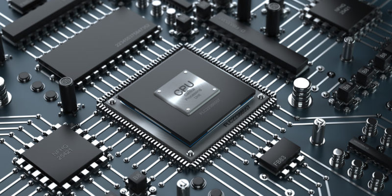
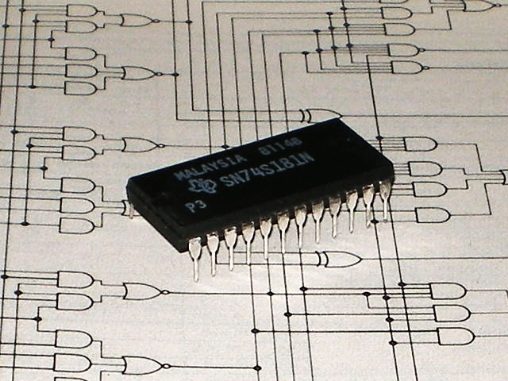
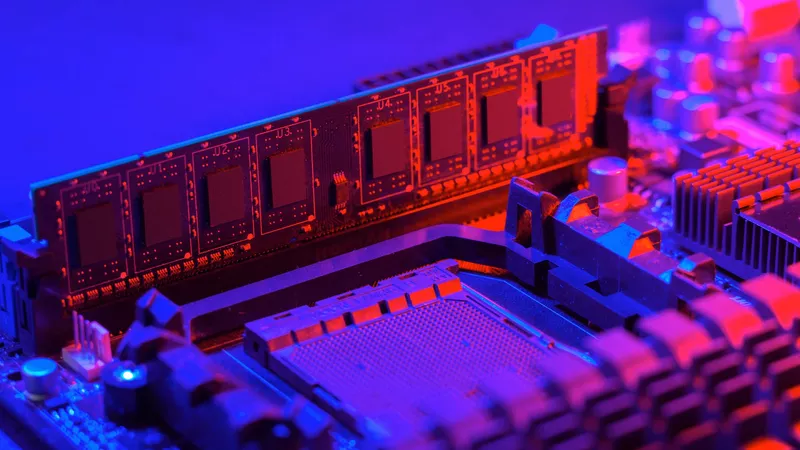
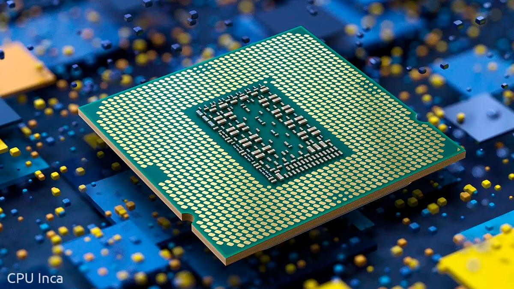

1.1 Modelos de arquitectura de computo.
1.1.1 Clasicas
Arquitectura Von Neumann
La unidad central de proceso (CPU), está conectada a una memoria principal única (casi siempre sólo RAM) donde se guardan las instrucciones del programa y los datos. A dicha memoria se accede a través de un sistema interconexión de buses único (control, direcciones y datos). En un sistema con arquitectura Von Neumann el tamaño de la unidad de datos o instrucciones está fijado por el ancho del bus que comunica la memoria con la CPU. El tener un único bus hace que el microprocesador sea más lento en su respuesta, ya que no puede buscar en memoria una nueva instrucción mientras no finalicen las transferencias de datos de la instrucción anterior. Componentes principales de Von Neumann
Modelo Harvard
Esta arquitectura utiliza los Micro controladores, tiene la unidad
central de proceso (CPU) conectada a dos memorias (una con las
instrucciones y otra con los datos) por medio de dos buses
diferentes. Una de las memorias contiene solamente las
instrucciones del programa (Memoria de Programa), y la otra sólo
almacena datos (Memoria de Datos). Ambos buses son totalmente
independientes lo que permite que la CPU pueda acceder de forma
independiente y simultánea a la memoria de datos y a la de
instrucciones. El tamaño de las instrucciones no está relacionado
con el de los datos, y por lo tanto puede ser optimizado para que
cualquier instrucción ocupe una sola posición de memoria de
programa, logrando así mayor velocidad y menor longitud de
programa. La principal desventaja de esta arquitectura; el bus de
datos y direcciones único se convierte en un cuello de botella por
el cual debe pasar toda la información que se lee de o se escribe
 a la memoria, obligando a que todos los accesos a esta sean
secuenciales. Limita el grado de paralelismo (acciones que se
pueden realizar al mismo tiempo) y por lo tanto, el desempeño de
la computadora.
a la memoria, obligando a que todos los accesos a esta sean
secuenciales. Limita el grado de paralelismo (acciones que se
pueden realizar al mismo tiempo) y por lo tanto, el desempeño de
la computadora.
1.1.2 Segmentadas
Es una de las tecnologías utilizadas para realizar la segmentación o paralelismo. Divide el procesador, en etapas, procesa una instrucción diferente en cada una y trabaja con varias a la vez. Pueden trabajar de forma paralela, en diferentes instrucciones, utilizando una cola de instrucciones para su comunicación, denominado entubamiento. La técnica de implementación clave utilizada para hacer CPU. La dependencia de datos y de control, que tiene como efecto la disminución del rendimiento del pipelining. La segmentación de cauce (pipelining) es una forma efectiva de organizar el hardware del CPU para realizar más de una operación al mismo tiempo. Consiste en descomponer el proceso de ejecución de las instrucciones en fases o etapas que permitan una ejecución simultánea. Las etapas están conectadas, cada una a la siguiente, para formar una especie de cauce las instrucciones se entran por un extremo, son procesadas a través de las etapas y salen por el otro. La productividad de la segmentación está determinada por la frecuencia con que una instrucción salga del cauce.
1.1.3 De multiprocesamiento
Se denomina multiprocesador a un computador que cuenta con dos o más microprocesadores (CPUs). La arquitectura NUMA, donde cada procesador tiene acceso y control exclusivo a una parte de la memoria. La arquitectura SMP, donde todos los procesadores comparten toda la memoria. Para que un multiprocesador opere correctamente necesita un sistema operativo especialmente diseñado para ello. La arquitectura NUMA, donde cada procesador tiene acceso y control exclusivo a una parte de la memoria. La arquitectura SMP, donde todos los procesadores comparten toda la memoria. Los CPU de multiprocesamiento según Flynn se clasifican de la siguiente manera:
1.2 Analisis de los componentes
1.2.1 Arquitecturas
Arquitecturas Cisc En la arquitectura computacional, CISC es un modelo de arquitectura, en donde los microprocesadores tienen un conjunto instrucciones que caracterizan por ser muy amplio y permitir operaciones complejas entre operandos, situados en la memoria o en los registros internos. Este tipo de arquitectura dificulta el paralelismo entre instrucciones, por lo que, en la actualidad, la mayoría de los sistemas CISC de alto rendimiento implementan un sistema que convierte dichas instrucciones complejas en varias instrucciones simples del tipo RISC, llamadas generalmente microinstrucciones. Dato importante: Los CISC pertenecen a la primera corriente de construcción de procesadores, antes del desarrollo de los RISC. Ademas Para realizar una sola instrucción un chip CISC requiere de cuatro a diez ciclos de reloj.
1.2.1.1 Unidad central de procesamiento
Se la suele llamar coloquialmente como microprocesador o simplemente procesador, y puedes considerarla como el cerebro de cualquier dispositivo. Se encarga de procesar todas las instrucciones del  dispositivo, leyendo las órdenes y requisitos del sistema operativo, así como las instrucciones de cada uno de los componentes y las aplicaciones. CPU es la que se encarga de que todo funcione correctamente, y de interpretar todo lo que quiere hacer el sistema operativo o los componentes, estableciendo las conexiones y realizando todos los cálculos precisos para que funcione. Cuanto más potente sea el procesador, más rápido podrá hacer las operaciones y más rápido funcionará tu dispositivo en general.
1.2.1.2 Unidad aritmetica lógica
 Es un circuito logico digital que realiza operaciones aritmeticas y logicas entres los datos de un circuito: suma resta, division y multiplicacion, asi como establece comparaciones logicas a traves de los condicionales logicos "si", "no", y "o". Todos los microprocesadores incluyen al menos una ALU, que varia su poder y complejidadsegún su finalidad Además, la ALU cuenta con una serie de registros para almacenar los datos y bits de informacion sobre los resultados. Operaciones a realizar por la ALU:
1.2.1.3 Registros
 Los registros que encuentran dentro de cada procesador su función
principales almacenar los valores de cada uno de los
datos,comandos,instrucciones o estados binarios que son los que
ordenan qué dato debe procesarse, así como la forma en la que se
debe realizar. Un registro no deja de ser una memoria de velocidad
alta y con poca capacidad. Cada registro puede contener una
instrucción, una dirección de almacenamiento o cualquier tipo de
dato. Cada procesador tiene varias asignaciones o tareas que debe de
realizar para el manejo de la información. La información es
recibida generalmente en código binario, procedente de las
aplicaciones para, después, procesarlos de una forma determinada.
Tipos de registros Los registros del procesador se dividen o
clasifican atendiendo al propósito que sirven o a las instrucciones
que les ordenan. Registros de datos: Guardan valores de datos
numéricos, como son los caracteres o pequeñas órdenes. Los
procesadores antiguos tenían un registro especial de datos: el
acumulador, el cual era usado para operaciones determinadas.
Los registros que encuentran dentro de cada procesador su función
principales almacenar los valores de cada uno de los
datos,comandos,instrucciones o estados binarios que son los que
ordenan qué dato debe procesarse, así como la forma en la que se
debe realizar. Un registro no deja de ser una memoria de velocidad
alta y con poca capacidad. Cada registro puede contener una
instrucción, una dirección de almacenamiento o cualquier tipo de
dato. Cada procesador tiene varias asignaciones o tareas que debe de
realizar para el manejo de la información. La información es
recibida generalmente en código binario, procedente de las
aplicaciones para, después, procesarlos de una forma determinada.
Tipos de registros Los registros del procesador se dividen o
clasifican atendiendo al propósito que sirven o a las instrucciones
que les ordenan. Registros de datos: Guardan valores de datos
numéricos, como son los caracteres o pequeñas órdenes. Los
procesadores antiguos tenían un registro especial de datos: el
acumulador, el cual era usado para operaciones determinadas.
1.2.1.4 Buses
Un bus se puede definir como una línea de interconexión portadora de información, constituida por varios hilos conductores (en sentido físico) o varios canales (en sentido de la lógica), por cada una de las cuales se transporta un bit de información. Existen dos tipos primordiales de buses (conexiones) para el envío de la información: bus paralelo o serial: Bus paralelo: Es un bus en el cual los datos son enviados por bytes al mismo tiempo, con la ayuda de varias líneas que tienen funciones fijas. La cantidad de datos enviada es bastante grande con una frecuencia moderada y es igual al ancho de los datos por la frecuencia de funcionamiento. En los computadores ha sido usado de manera intensiva, desde el bus del procesador, los buses de discos duros, tarjetas de expansión y de vídeo hasta las impresoras. Bus serie: En este los datos son enviados, bit a bit y se reconstruyen por medio de registros o rutinas de software. Está formado por pocos conductores y su ancho de banda depende de la frecuencia.
1.2.2 Memoria
1.2.2.1 Conceptos basicos del manejo de la memoria
La gestión de memoria o administración de memoria es el acto de gestionar la memoria de un dispositivo informático. El proceso de asignación de memoria a los programas que la solicitan. La gestión de la memoria principal de una computadora es una tarea de suma importancia para el funcionamiento de la misma. Los sistemas de memoria virtual separan las direcciones de memoria utilizadas por un proceso de las direcciones físicas reales, permitiendo la separación de procesos e incrementando la cantidad efectiva de memoria de acceso aleatorio utilizando la paginación. La calidad de la gestión de la memoria es crucial para las prestaciones del sistema. La administración de memoria se refiere a los distintos métodos y operaciones que se encargan de obtener la máxima utilidad de la memoria, organizando los procesos y programas que se ejecutan de manera tal que se aproveche de la mejor manera posible el espacio disponible. Las técnicas que existen para la carga de programas en la memoria son: partición fija, que es la división de la memoria libre en varias partes (de igual o distinto tamaño) y la partición dinámica, que son las particiones de la memoria en tamaños que pueden ser variables, según la cantidad de memoria que necesita cada proceso.
1.2.2.2 Memoria principal
 La memoria del semiconductor utiliza en su arquitectura circuitos integrados basados en semiconductores para almacenar información. Un chip de memoria de semiconductor puede contener millones de minúsculos transistores o condensadores. Existen memorias de semiconductor de ambos tipos: volátiles y no volátiles. En las computadoras modernas, la memoria principal consiste casi exclusivamente en memoria de semiconductor volátil y dinámica, también conocida como memoria dinámica de acceso aleatorio o más comúnmente RAM (Random Access Memory).
1.2.2.3 Memoria cache
Es la memoria de acceso rápido de una computadora, que guarda temporalmente las últimas informaciones procesadas. La memoria caché es un búfer especial de memoria que poseen las computadoras, que funciona de manera similar a la memoria principal, pero es de menor tamaño y de acceso más rápido. Es usada por el procesador para reducir el tiempo de acceso a datos ubicados en la memoria principal que se utilizan con más frecuencia. La caché es una memoria que se sitúa entre la unidad central de procesamiento (CPU) y la memoria de acceso aleatorio (RAM) para acelerar el intercambio de datos. Cuando se accede por primera vez a un dato, se hace una copia en la caché; los accesos siguientes se realizan a dicha copia, haciendo que sea menor el tiempo de acceso medio al dato. Cuando el procesador necesita leer o escribir en una ubicación en memoria principal, primero verifica si una copia de los datos está en la memoria caché; si es así, el procesador de inmediato lee o escribe en la memoria caché, que es mucho más rápido que de la lectura o la escritura a la memoria principal. La memoria caché cuenta con 3 niveles, cada uno teniendo más caché pero siendo mas lenta, siendo la de nivel 3 la más lenta.
1.2.3 Manejo de entrada/salida
1.2.3.1 Módulos de entrada/salida.
 Para poder hacer una operación entre el procesador y un periférico,
se necesita conectar estos dispositivos a la computadora y gestionar
de manera correcta la transferencia de datos. Esto, se puede
realizar mediante los sistemas de módulos de Entrada/Salida. Estos
módulos están conectados con el procesador y la memoria principal,
cada uno controla uno o más dispositivos externos.
Para poder hacer una operación entre el procesador y un periférico,
se necesita conectar estos dispositivos a la computadora y gestionar
de manera correcta la transferencia de datos. Esto, se puede
realizar mediante los sistemas de módulos de Entrada/Salida. Estos
módulos están conectados con el procesador y la memoria principal,
cada uno controla uno o más dispositivos externos.
1.2.3.2 Entrada/Salida Programada
 La entrada-salida programada (también entrada / salida programada , E / S programada , PIO ) es un método de
transmisión de datos , a través de entrada / salida (E / S), entre una unidad central de procesamiento (CPU) y
un dispositivo periférico , como un adaptador de red o un dispositivo de almacenamiento Parallel ATA (PATA,
anteriormente AT Attachment (ATA)). Cada transferencia de elementos de datos se inicia mediante una instrucción
en el programa, que involucra a la CPU para cada transacción.
Por el contrario, en las operaciones de acceso directo a memoria (DMA), la CPU no participa en la transferencia
de datos.
El término puede referirse a E / S mapeadas en memoria (MMIO) o E / S mapeadas en puertos (PMIO).
PMIO se refiere a transferencias que utilizan un espacio de direcciones especial fuera de la memoria normal, al
que generalmente se accede con instrucciones dedicadas, comoEN y FUERAen arquitecturas x86.
MMIO [1] se refiere a transferencias a dispositivos de E / S que están mapeados en el espacio de direcciones
normal disponible para el programa.
PMIO fue muy útil para los primeros microprocesadores con espacios de direcciones pequeños, ya que los
dispositivos de E / S no consumían el valioso recurso.
La entrada-salida programada (también entrada / salida programada , E / S programada , PIO ) es un método de
transmisión de datos , a través de entrada / salida (E / S), entre una unidad central de procesamiento (CPU) y
un dispositivo periférico , como un adaptador de red o un dispositivo de almacenamiento Parallel ATA (PATA,
anteriormente AT Attachment (ATA)). Cada transferencia de elementos de datos se inicia mediante una instrucción
en el programa, que involucra a la CPU para cada transacción.
Por el contrario, en las operaciones de acceso directo a memoria (DMA), la CPU no participa en la transferencia
de datos.
El término puede referirse a E / S mapeadas en memoria (MMIO) o E / S mapeadas en puertos (PMIO).
PMIO se refiere a transferencias que utilizan un espacio de direcciones especial fuera de la memoria normal, al
que generalmente se accede con instrucciones dedicadas, comoEN y FUERAen arquitecturas x86.
MMIO [1] se refiere a transferencias a dispositivos de E / S que están mapeados en el espacio de direcciones
normal disponible para el programa.
PMIO fue muy útil para los primeros microprocesadores con espacios de direcciones pequeños, ya que los
dispositivos de E / S no consumían el valioso recurso.
1.2.3.3 Entrada/Salida mediante interrupciones
Esta técnica pretende evitar que el procesador pare o haga trabajo improductivo, mientras que espera a que el
periférico esté preparado para hacer una nueva operación.
El hardware de la computadora, necesita tener un conjunto de líneas de control del bus del sistema y de petición
de interrupción.
Funcionamiento:
El procesador ejecuta instrucciones de un programa. Al finalizar cada instrucción comprueba si se ha producido
 una interrupción.
En caso afirmativo se salva el estado actual del programa (contador del programa y registros) y se salta a
ejecutar la rutina de servicio correspondiente.
La rutina de servicio efectúa las operaciones apropiadas en la E/S para realizar la transferencia de datos
solicitada.
Al finalizar la rutina de servicio se recupera el estado de la CPU y se continúa ejecutando el programa que se
estaba ejecutando antes de la interrupción.
Las interrupciones pueden ser:
ENMASCARABLES (se pueden dejar de atender por software)
NO ENMASCARABLES (siempre atendidas)
Dos formas de conocer la dirección/posición (vector) donde se encuentra la rutina de servicio de la interrupción
Vector de interrupciones siempre FIJO ó el periférico suministra el vector de interrupción
una interrupción.
En caso afirmativo se salva el estado actual del programa (contador del programa y registros) y se salta a
ejecutar la rutina de servicio correspondiente.
La rutina de servicio efectúa las operaciones apropiadas en la E/S para realizar la transferencia de datos
solicitada.
Al finalizar la rutina de servicio se recupera el estado de la CPU y se continúa ejecutando el programa que se
estaba ejecutando antes de la interrupción.
Las interrupciones pueden ser:
ENMASCARABLES (se pueden dejar de atender por software)
NO ENMASCARABLES (siempre atendidas)
Dos formas de conocer la dirección/posición (vector) donde se encuentra la rutina de servicio de la interrupción
Vector de interrupciones siempre FIJO ó el periférico suministra el vector de interrupción
1.2.3.4 Acceso directo a memoria
El DMA (acceso directo a la memoria) permite que el dispositivo de red mueva los datos del paquete directamente a la memoria del sistema, reduciendo la utilización de la CPU. Sin embargo, la frecuencia y los intervalos aleatorios en los cuales los paquetes llegan no permiten que el sistema ingrese un estado de energía más bajo. El coalescentes DMA permite que el NIC recoja los paquetes antes de que inicie un evento DMA. Esto puede aumentar la latencia de la red, pero también aumenta las probabilidades de que el sistema consuma menos energía. Los adaptadores y dispositivos de red basados en el controlador Ethernet Intel® I350 (y controladores posteriores) Asistencia la fusión de DMA. Los valores coalescentes más altos de DMA resultan en más energía guardada, pero pueden aumentar la latencia de red de su sistema. Si habilita la coalescación de DMA, también debe establecer la tasa de moderación de interrupciones en "mínimo". Esto minimiza el impacto de latencia impuesto por la coalescencia de DMA y da como resultado un mejor rendimiento de rendimiento de red máximo. Debe habilitar la coalescencia de DMA en todos los puertos activos del sistema. Usted no puede ganar ningún ahorro de energía si se habilita sólo en algunos de los puertos en su sistema. También hay varias configuraciones de BIOS, plataformas y aplicaciones que afectarán a su potencial ahorro energético.
1.2.3.5 Canales y procesadores de entrada/salida
 EL canal de E/S es una extensión del bus del 8088. Este canal contiene un bus de datos bidireccinal de 8 bits,
20 líneas de dirección, 6 niveles de interrupción, líneas de control para las operaciones de lectura y escritura
para la memoria y la E/S, líneas de control de 3 canales de DMA, y líneas de control para el tiempo de refresco
de memoria.
Los canales de E/S proporcionan una línea Ready para permitir operaciones con dispositivos de memoria o de E/S
lentos.
Cuando la línea no está activada por un dispositivo, el procesador genera ciclos de lectura y esritura a memoria
que toman cuatro ciclos de 210 ns (esto es, 840 ns) por byte.
Todos los ciclos de lectura y escritura a E/S generados por el procesador requieren de cinco ciclos de 210 ns de
reloj (1.05 ms) por byte.
Todas las transferencias DMA requieren de cinco ciclos de reloj para un ciclo de tiempo de 1.05 ms por byte.
Los ciclos de reloj se presentan aproximadamente cada 15 m sec y requieren de cinco ciclos de reloj.
Los dispositivos de E/S están direccionados utilizando un mapeo de E/S con el espacio de direccionamiento. El
canal proporciona a las tarjetas de E/S 512 direcciones de dispositivos.
EL canal de E/S es una extensión del bus del 8088. Este canal contiene un bus de datos bidireccinal de 8 bits,
20 líneas de dirección, 6 niveles de interrupción, líneas de control para las operaciones de lectura y escritura
para la memoria y la E/S, líneas de control de 3 canales de DMA, y líneas de control para el tiempo de refresco
de memoria.
Los canales de E/S proporcionan una línea Ready para permitir operaciones con dispositivos de memoria o de E/S
lentos.
Cuando la línea no está activada por un dispositivo, el procesador genera ciclos de lectura y esritura a memoria
que toman cuatro ciclos de 210 ns (esto es, 840 ns) por byte.
Todos los ciclos de lectura y escritura a E/S generados por el procesador requieren de cinco ciclos de 210 ns de
reloj (1.05 ms) por byte.
Todas las transferencias DMA requieren de cinco ciclos de reloj para un ciclo de tiempo de 1.05 ms por byte.
Los ciclos de reloj se presentan aproximadamente cada 15 m sec y requieren de cinco ciclos de reloj.
Los dispositivos de E/S están direccionados utilizando un mapeo de E/S con el espacio de direccionamiento. El
canal proporciona a las tarjetas de E/S 512 direcciones de dispositivos.
1.2.4 Buses
1.2.4.1 Tipos de buses
Existen dos tipos de transferencia en los buses: Serie: El bus solamente es capaz de transferir los datos bit a bit. El bus tiene un único cable que transmite la información. Paralelo: El bus permite transferir varios bits simultáneamente, por ejemplo 8 bits. Aunque en primera instancia parece mucho más eficiente la transferencia en paralelo, esta presenta inconvenientes: La frecuencia de reloj en el bus paralelo tiene que ser más reducida. La longitud de los cables que forman el bus está limitada por las posibles interferencias, el ruido y los retardos en la señal. Además, los modernos buses serie están formados por varios canales: En este caso se transmite por varios buses serie simultáneamente. En los primeros computadores electrónicos, era muy habitual encontrar buses paralelos, quedando los buses serie dedicados para funciones de menor entidad y dispositivos lentos, como el teclado. La tendencia en los últimos años es reemplazar los buses paralelos por buses serie (que suelen ser multicanal). Estos son más difíciles de implementar, pero están dejando velocidades de transferencia más elevadas, además de permitir longitudes de cable mayores.
Estructura de los buses
Un bus es un medio compartido de comunicación constituido por un conjunto de líneas (conductores) que conecta las diferentes unidades de un computador. La principal función de un bus será, pues, servir de soporte para la realización de transferencias de información entre dichas unidades. La unidad que inicia y controla la transferencia se conoce como master del bus para dicha transferencia, y la unidad sobre la que se realiza la transferencia se conoce como slave. Los papeles de master y slave son dinámicos, de manera que una misma unidad puede realizar ambas funciones en transferencias diferentes. Por ejemplo, una unidad de DMA hace de slave en la inicialización que realiza el master, la CPU, para una operación de E/S. Sin embargo, cuando comienza la operación, la unidad de DMA juega el papel de master frente a la memoria, que en esta ocasión hace de slave. Para garantizar el acceso ordenado al bus, existe un sistema de arbitraje, centralizado o distribuido, que establece las prioridades cuando dos o más unidades pretenden acceder al mismo tiempo al bus, es decir, garantiza que en cada momento sólo exista un master. Para establecer el tiempo de duración de las transferencias y que sea conocido tanto por el master como por el slave, un bus debe disponer de los medios necesarios para la sincronización master-slave.
Jerarquia de buses
Los computadores modernos tienen por lo menos 4 buses diferentes (bus interno, bus del procesador, bus del caché, bus de memoria, bus local de E/S, bus estándar de E/S). Se les considera una jerarquía, porque cada bus se conecta al nivel superior a él dentro del computador, integrando así todas las partes del computador. Cada uno es generalmente más lento que el que se encuentra sobre él, siendo el bus del procesador el más rápido tratándose de que este es el dispositivo más rápido del computador. Para mejorar el rendimiento del bus, las jerarquías de buses fueron implementadas cada vez más.